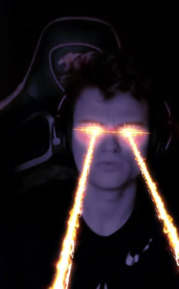

12 танго
A Lifestealer buys twelve Tango. The exaggerated amount of regeneration becomes the joke.
Archive / 001—016
The meme names remain in Russian. Every explanation is in English. This page contains the full documented list used by the project.
“Двенадцать танго!” — a tiny inventory decision became a piece of Dota vocabulary.
Source: Игромания, “Двенадцать танго! — Легендарные мемы в Dota 2”.
Timeline / documented roots
A compact chronology of the meme culture described by the archive source. Dates are presented as historical markers, not as dates invented for the project.
01—16
A Lifestealer buys twelve Tango. The exaggerated amount of regeneration becomes the joke.
Luna repeatedly tells Lion which abilities to use against Abaddon. The exact wording becomes the meme.
A SereGGa stream moment turns a request for Shackles into a reusable phrase for chaotic coordination.
An unconventional Mask of Madness + Skull Basher Pudge build becomes a legendary pub-build reference.
Serёga Pirat uses Radiance on Anti-Mage instead of the expected Battle Fury, creating a famous unusual-build meme.
A cancelled teleport becomes a memorable Serёga Pirat reaction and later a community catchphrase.
Sasavot's Bloodseeker asks Pudge not to take a regeneration rune while escaping danger. Pudge takes it anyway.
An Abaddon player named Tolik counterattacks the enemy base while his own base is under siege and destroys it first.
While the team needs Bounty Hunter during a final siege, he remains elsewhere farming. The call becomes the meme.
A support teleports toward mid and discovers that the tower has already disappeared. The reaction becomes a classic early-game line.
lena_golovach's Wraith King misses two attacks while MKB is in the inventory. The contradiction is the entire joke.
ponyaaaa lands a Black Hole and turns a song lyric into an improvised celebration.
A collection of highly emotional streamer remarks that became part of the wider Dota community vocabulary.
Juggernaut's voice line turns “rune” and “chest” into the compact wordplay “рундук”.
A young Nature's Prophet player invents the name “farm-lings” for the summoned units. The singular ability level makes the moment funnier.
A replay shows Silencer with unexpectedly low gold after twenty minutes, producing an unexplained community joke.
Video evidence
These videos are stored in the repository's media folder and are loaded directly by the page.
The original meme clip connected to the twelve-Tango story.
MP4 / local archive
The clip behind the famous ability instruction.
MP4 / local archive
The SereGGa stream moment preserved as local evidence.
MP4 / local archive
The Pudge and regeneration-rune incident.
MP4 / local archive
The team calls for Bounty Hunter while the siege continues.
MP4 / local archive
The Abaddon base-race moment preserved as a local recording.
MP4 / local archive
Separate dossier

This archive deliberately keeps the Old God separate from Papich. It is a standalone meme entry with its own visual identity.
The uploaded image is used as the exhibit image for this student project.
Reference table
| DOTA PUB CLASSIFICATION | |||
|---|---|---|---|
| Species | Habitat | Main Weapon | Weakness |
| Pudge Player | Mid / Roam | Hook | Accuracy |
| Invoker Player | Mid | Spells | Keyboard |
| Techies Player | Anywhere | Mines | Fun |
| Anti-Mage Player | Jungle | Farm | Teamfight |
| Sniper Player | Backline | Range | Assassin |
| Support Species | Lane | Wards | Map vision |
| Classification is fictional and written for the site's comedic archive. | |||
| Total | 5 documented fictional species | ||